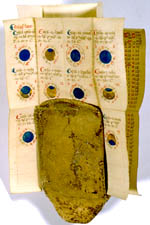

Almanak. Latijn. Handschrift op perkament, 19 ff., 145 x 110 mm., gevouwen tot 75 x 55 mm. Noord-Frankrijk, 1425. -- (VUL 100 C)
De almanak is uitgevoerd als een zogenaamd gordelboekje. De bladen zijn aan één kant beschreven, opgevouwen en aan de top gebundeld in een taps toelopend gevoerd leren huisje, dat wellicht aan de gordel gedragen werd. Het boekje kon in elk geval in deze vorm gemakkelijk worden meegenomen. Naast almanakken werden ook wel boekjes voor de medische praktijk of gebedenboekjes zo uitgevoerd (zie nummer 6).
Deze almanak bevat een heel gedetailleerde kalender. De heiligennamen verraden dat het handschrift uit Noord-Frankrijk stamt. De astronomische gegevens zijn nog niet uitputtend onderzocht. De opengevouwen bladen, folia 18 en 19, bevatten een berekening van de maansverduisteringen tussen 1425 en 1462, met afbeeldingen van de schijngestalten van de maan.
Zulke tabellen bewijzen de hoge vlucht die de astronomie al in de middeleeuwen had genomen. Voor de onbekende gebruiker van de almanak, ongetwijfeld een gestudeerd man, hadden ze nog een andere betekenis. Een maansverduistering werd immers opgevat als een teken van een naderende catastrofe.
Literatuur
- G.I. Lieftinck, Manuscrits datés conservés dans les Pays-Bas. T. 1. Amsterdam 1964, nr. 247.
| vorige pagina | top pagina |